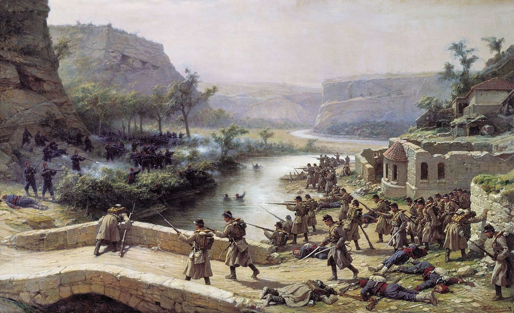

Добро пожаловать на сайт
Русско-Турецкие Войны
Эпоха сражений, изменивших историю.
Вступление
Русско-турецкие войны XVII века представляли собой серию военных конфликтов, в основном
сосредоточенных вокруг борьбы за контроль над южнорусскими степями, украинскими землями и
Азовским морем. Эти войны были значительно менее масштабными и длительными, чем конфликты
последующих столетий, но оказали существенное влияние на формирование геополитической ситуации в
регионе.
Россия, стремясь закрепиться на юге и защитить свои границы от набегов крымских татар
(вассалов Османской империи), вступала в конфликты с Османской империей. Эти войны часто были
связаны с борьбой за влияние на казачество и украинские земли, которые то присоединялись к
России, то оказывались под контролем Османской империи.

Война 1768—1774гг.
Русско-турецкая война 1768–1774 годов — драматичный поворот в противостоянии двух империй. Победы России, разгром турецкого флота и обретение контроля над Крымом открыли новые горизонты на юге.
Подробнее
Война 1787-1791гг.
Война России и Турции 1787–1791 годов: союз с Австрией, блестящие победы Суворова и Ясский мир, который изменил карту региона.
Подробнее